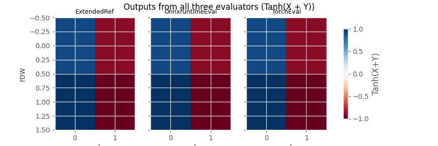
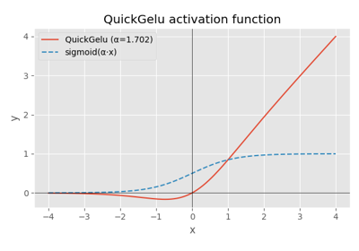

Note
Go to the end to download the full example code.
Comparing the three evaluators¶
yobx ships three evaluators that share the same
run(outputs, feeds) interface but differ in their backend:
ExtendedReferenceEvaluator— pure Python / NumPy, extendsonnx.reference.ReferenceEvaluatorwith contrib-op kernels. No ONNX Runtime dependency.OnnxruntimeEvaluator— runs each node individually throughonnxruntime.InferenceSession. Allows full intermediate-result inspection.TorchReferenceEvaluator— hand-written PyTorch kernels; inputs and outputs aretorch.Tensor; supports CUDA.
This example runs the same model through all three and verifies the outputs agree.
import numpy as np
import onnx
import onnx.helper as oh
import torch
from yobx.reference import ExtendedReferenceEvaluator
from yobx.reference.onnxruntime_evaluator import OnnxruntimeEvaluator
from yobx.reference.torch_evaluator import TorchReferenceEvaluator
TFLOAT = onnx.TensorProto.FLOAT
Build a small model¶
The model computes Z = Tanh(X + Y).
model = oh.make_model(
oh.make_graph(
[
oh.make_node("Add", ["X", "Y"], ["T"]),
oh.make_node("Tanh", ["T"], ["Z"]),
],
"add_tanh",
[
oh.make_tensor_value_info("X", TFLOAT, [None, None]),
oh.make_tensor_value_info("Y", TFLOAT, [None, None]),
],
[oh.make_tensor_value_info("Z", TFLOAT, [None, None])],
),
opset_imports=[oh.make_opsetid("", 18)],
ir_version=10,
)
x = np.array([[1.0, -2.0], [3.0, -4.0]], dtype=np.float32)
y = np.array([[0.5, 0.5], [-0.5, -0.5]], dtype=np.float32)
1. ExtendedReferenceEvaluator¶
Pure Python / NumPy. A drop-in replacement for
onnx.reference.ReferenceEvaluator that also handles contrib ops.
ref = ExtendedReferenceEvaluator(model)
(result_ref,) = ref.run(None, {"X": x, "Y": y})
print("ExtendedReferenceEvaluator:", result_ref)
ExtendedReferenceEvaluator: [[ 0.9051482 -0.9051482 ]
[ 0.9866143 -0.99975324]]
2. OnnxruntimeEvaluator¶
Executes each node via ONNX Runtime. Setting intermediate=True
returns a dictionary with all intermediate results, which is very
handy when debugging a model.
ort_eval = OnnxruntimeEvaluator(model)
(result_ort,) = ort_eval.run(None, {"X": x, "Y": y})
print("OnnxruntimeEvaluator:", result_ort)
OnnxruntimeEvaluator: [[ 0.9051482 -0.9051482 ]
[ 0.98661435 -0.9997532 ]]
Retrieve intermediate results:
all_intermediates = ort_eval.run(None, {"X": x, "Y": y}, intermediate=True)
for name, value in sorted(all_intermediates.items()):
print(f" {name}: {value}")
T: [[ 1.5 -1.5]
[ 2.5 -4.5]]
X: [[ 1. -2.]
[ 3. -4.]]
Y: [[ 0.5 0.5]
[-0.5 -0.5]]
Z: [[ 0.9051482 -0.9051482 ]
[ 0.98661435 -0.9997532 ]]
3. TorchReferenceEvaluator¶
All computation uses PyTorch tensors. The same model can run on CUDA
by passing providers=["CUDAExecutionProvider"].
torch_eval = TorchReferenceEvaluator(model)
x_t = torch.from_numpy(x)
y_t = torch.from_numpy(y)
(result_torch,) = torch_eval.run(None, {"X": x_t, "Y": y_t})
print("TorchReferenceEvaluator:", result_torch)
TorchReferenceEvaluator: tensor([[ 0.9051, -0.9051],
[ 0.9866, -0.9998]])
Verify all three evaluators agree¶
assert np.allclose(result_ref, result_ort), "ExtendedRef vs ORT mismatch"
assert np.allclose(result_ref, result_torch.numpy()), "ExtendedRef vs Torch mismatch"
print("All three evaluators produce the same result ✓")
All three evaluators produce the same result ✓
Summary¶
Evaluator |
Input/output type |
Highlights |
|---|---|---|
ExtendedReferenceEvaluator |
NumPy ndarray |
No ORT required; contrib ops |
OnnxruntimeEvaluator |
NumPy or PyTorch |
intermediate=True; ORT backend |
TorchReferenceEvaluator |
torch.Tensor |
CUDA support; no round-trip |
Plot: outputs from all three evaluators¶
The heat-maps below show the Tanh(X + Y) output produced by each
evaluator. All three panels are identical, confirming the results agree.
import matplotlib.pyplot as plt # noqa: E402
fig, axes = plt.subplots(1, 3, figsize=(9, 3), sharey=True)
labels = ["ExtendedRef", "OnnxruntimeEval", "TorchEval"]
results_all = [result_ref, result_ort, result_torch.numpy()]
for ax, label, res in zip(axes, labels, results_all):
im = ax.imshow(res, cmap="RdBu", vmin=-1, vmax=1, aspect="auto")
ax.set_title(label, fontsize=9)
ax.set_xlabel("col")
axes[0].set_ylabel("row")
fig.colorbar(im, ax=axes.tolist(), shrink=0.8, label="Tanh(X+Y)")
fig.suptitle("Outputs from all three evaluators (Tanh(X + Y))")
plt.show()

Total running time of the script: (0 minutes 0.608 seconds)
Related examples

ExtendedReferenceEvaluator: running models with contrib operators